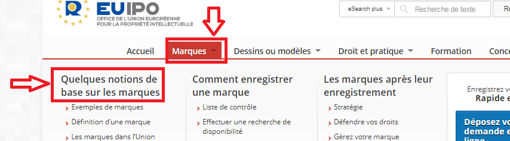
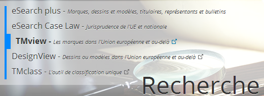
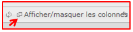
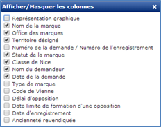
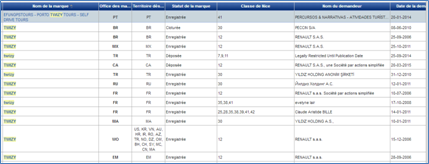
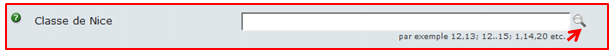

PROTECTION DE LA MARQUE
A l'aide du site européen https://euipo.europa.eu/ohimportal/fr/home
🡺 Accueil > Marques> Quelques notions de base sur les marques.

- Au sens de la propriété industrielle définir « la marque »:
Retourner sur l’onglet « Accueil » du site et cliquer sur « TMView »,

- Faire une recherche avancée pour la marque "TWIZY" un seul mot. Effectuer une capture d'écran de votre recherche effectuée (préalablement sélectionner les colonnes les plus intéressantes (voir ci dessous) à afficher sur le site, voir l'outil en bas de l'écran).
 
- En observant les différences dans le tableau des résultats, expliquer pourquoi Renault S.A.S. a déposé plusieurs fois cette marque?
- Que signifient les informations situées dans la colonne « classe de Nice »?
Vous pouvez répondre en utilisant l’outil « recherche avancée» « aide classe de Nice ».
- Préciser la signification « classe de Nice : 12 »
- D'autres sociétés ont elles aussi déposé, cette marque? Est ce légal et pourquoi? (Observez la colonne « classe de Nice»)
En recherchant dans l’onglet « brochures INPI" dans le chapitre ressources (cliquer) » de la structure, répondre aux questions suivantes:
Indiquer où on doit déposer une marque.
Indiquer combien de temps « dure » une marque.
Indiquer qui peut déposer une marque ?
Created with the Personal Edition of HelpNDoc: Create help files for the Qt Help Framework